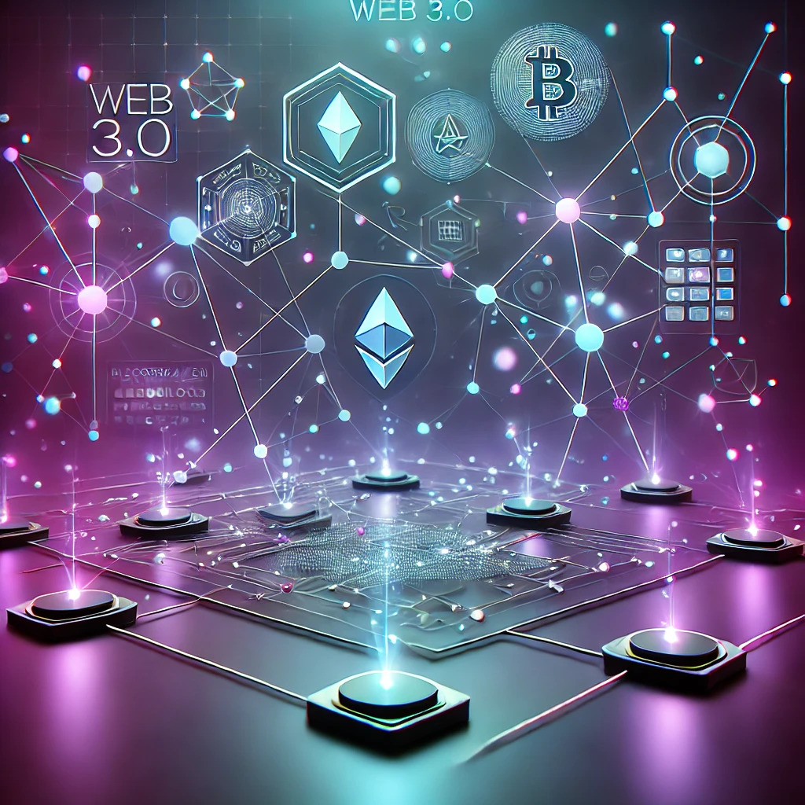

КОНЦЕПТWEB 3.0
Реферат по учебной дисциплине «Интернет-технологии»
СТАНКИН
ВВЕДЕНИЕ
В настоящее время информационно-коммуникационные технологии (ИКТ) и Интернет-технологии (ИТ) продолжают стремительно развиваться, оказывая значительное влияние как на технологические процессы, так и на социальные аспекты жизни общества. ИТ формируют основу цифровой экономики, создавая новые возможности для бизнеса, государственных структур и общества в целом. Важно понимать современные тренды и перспективные направления в данной области, чтобы эффективно применять их в различных отраслях.
Современные ИТ оказывают всеобъемлющее влияние на различные сферы деятельности. С технологической точки зрения ключевыми направлениями являются: искусственный интеллект, Machine Learning, облачные технологии, интернет вещей (IoT).
С социальной точки зрения ИТ оказывают влияние на образование, здравоохранение, культуру и социальные связи. Интернет и мобильные технологии меняют способы взаимодействия людей, расширяя доступ к информации и услугам, но также вызывают вопросы в области кибербезопасности и защиты данных.
Цифровая экономика — это экономика, в основе которой лежат цифровые технологии. Она охватывает все сферы общества, от бизнеса до государственного управления, и характеризуется высокой степенью автоматизации, анализом данных и использованием цифровых платформ [1].
Основные тренды цифровизации включают:
- 1 цифровизация производственных процессов;
- 2 электронное правительство;
- 3 электронная коммерция.
Роль ИТ в этих процессах заключается в создании платформ, систем управления данными и решений для автоматизации. Без ИТ цифровая экономика не могла бы существовать, так как именно они обеспечивают взаимосвязь всех участников и оптимизацию процессов.
Индустрия 4.0 — это концепция, связанная с четвертой промышленной революцией, которая включает цифровизацию производственных процессов [2]. Сюда входят: киберфизические системы, Big Data и аналитика, дополненная и виртуальная реальность (AR и VR), а также IoT.
Перспективные ИТ в рамках Индустрии 4.0 включают развитие IoT, машинного обучения, а также технологий виртуальных симуляций и цифровых двойников.
Web 3.0 — это следующая эволюция интернета, предполагающая децентрализованный подход к взаимодействию и использованию данных [3].
Технологические тренды в Web 3.0 включают развитие блокчейна, децентрализованных приложений (dApps) и внедрение криптографических методов для обеспечения безопасности и конфиденциальности данных.
Таким образом, развитие ИТ сегодня происходит на стыке различных технологий и сфер жизни, что формирует новые модели ведения бизнеса и взаимодействия в обществе. Цифровая экономика, Индустрия 4.0 и Web 3.0 — это ключевые концепции, которые определяют современные и будущие тренды в мире технологий.
КЛЮЧЕВЫЕ НАПРАВЛЕНИЯ РАЗВИТИЯ ИТ В КОНЦЕПЦИИ «WEB 3.0»
Концепция «Web 3.0» представляет собой новую фазу развития интернета, которая кардинально отличается от предыдущих этапов (Web 1.0 и Web 2.0). Если Web 1.0 можно охарактеризовать как статичный интернет с ограниченными возможностями для взаимодействия, а Web 2.0 — как эпоху социальных сетей и интерактивных платформ, то Web 3.0 знаменует собой децентрализацию, автономию и обеспечение максимального контроля пользователей над своими данными и взаимодействиями. Основной целью Web 3.0 является создание интернета, где данные пользователей не контролируются центральными организациями, а распределяются между участниками сети [4]. Это достигается с помощью новых технологий и подходов в ИТ, которые меняют существующие модели цифрового взаимодействия.
Одним из ключевых направлений развития Web 3.0 является блокчейн — технология, которая лежит в основе децентрализованных систем. Блокчейн обеспечивает безопасное хранение и передачу данных, позволяя пользователям взаимодействовать друг с другом напрямую, без участия третьих сторон, таких как центральные серверы или крупные интернет-компании. Этот подход усиливает конфиденциальность и защищённость данных, что особенно важно в условиях современного цифрового мира. Криптовалюты и токенизация являются продолжением идеи децентрализации, предлагая новые модели цифровой экономики, где каждый пользователь может участвовать в транзакциях и владеть цифровыми активами без необходимости доверять централизованным структурам. Это открывает путь к новой форме электронных денег, более прозрачной и независимой от традиционных финансовых систем.
Развитие децентрализованных приложений (dApps) — ещё одно важное направление в рамках Web 3.0. Эти приложения функционируют в децентрализованных сетях, таких как Ethereum, что позволяет пользователям получать доступ к цифровым сервисам без необходимости взаимодействия с централизованными платформами, такими как Google или Facebook. dApps обеспечивают новые модели взаимодействия, где пользователи владеют своими данными и могут участвовать в управлении и развитии самих платформ. Интернет вещей (IoT) также играет важную роль в развитии Web 3.0, предоставляя возможность взаимодействия между миллиардами подключённых устройств. IoT в Web 3.0 создаёт среду, где устройства могут автономно обмениваться данными и принимать решения, что улучшает как личные, так и промышленные процессы.
Семантический веб и технологии обработки данных также находятся в центре внимания Web 3.0. Семантический веб позволяет интернету «понимать» данные на более глубоком уровне, что делает поиск и взаимодействие с информацией более эффективным. Это достижимо благодаря продвинутым алгоритмам и системам, способным распознавать контекст данных и автоматически связывать их между собой, что позволяет улучшить пользовательский опыт и облегчить доступ к нужной информации. Виртуальная и дополненная реальность (VR/AR) формируют новые способы взаимодействия с цифровым контентом, создавая иммерсивные среды, в которых пользователи могут активно взаимодействовать с информацией, услугами и друг с другом.
Однако одной из самых перспективных и активно развивающихся технологий Web 3.0 является искусственный интеллект и машинное обучение (AI/ML). Эти технологии занимают центральное место в концепции интеллектуализации веба, позволяя создавать адаптивные системы, которые могут автоматически обучаться, анализировать огромные объёмы данных и принимать решения на основе полученных знаний. Это позволяет создавать более «умные» цифровые сервисы, которые адаптируются под конкретные требования каждого пользователя [5].

AI И ML
Искусственный интеллект (AI) и машинное обучение (ML) являются ключевыми технологиями, которые играют центральную роль в концепции Web 3.0, обеспечивая развитие более умных и автономных цифровых экосистем. В Web 3.0 эти технологии направлены на повышение эффективности и персонализации взаимодействий в сети, а также на управление огромными объёмами данных, которые генерируются пользователями и устройствами [6]. В отличие от предыдущих этапов развития интернета, Web 3.0 опирается на более интеллектуальные системы, которые могут самостоятельно учиться и принимать решения на основе анализа данных, обеспечивая более гибкие и адаптивные решения для пользователей.
Одной из важнейших задач AI и ML в Web 3.0 является обеспечение персонализированного опыта для каждого пользователя. Традиционные системы Web 2.0 основывались на централизованной обработке данных, что ограничивало возможности глубокого анализа и персонализации. В Web 3.0, благодаря децентрализации и применению AI/ML, интернет-системы могут настраиваться под конкретные запросы и предпочтения пользователей, анализируя их поведение и взаимодействия с цифровыми сервисами. Это открывает путь к созданию контента и услуг, которые максимально соответствуют потребностям каждого человека, будь то рекомендации в электронной коммерции, персонализированные новостные ленты или адаптированные развлекательные платформы [7].
AI и ML также играют ключевую роль в обработке больших данных, которые являются основой Web 3.0. В децентрализованных сетях и приложениях (dApps) данные поступают из множества источников — как от пользователей, так и от подключённых устройств, что создает сложную структуру информации. Машинное обучение позволяет анализировать эти данные в режиме реального времени, выявляя скрытые закономерности и тренды, которые можно использовать для принятия решений и оптимизации работы систем. Это особенно важно в контексте интернета вещей (IoT), где AI и ML помогают координировать работу множества устройств, делая возможным более эффективное управление производственными процессами, умными домами и другими подключёнными системами [8].
Семантический анализ — ещё одно важное применение AI в Web 3.0. Благодаря возможностям машинного обучения, интернет-системы могут лучше понимать контекст данных и запросов пользователей, что позволяет улучшить качество поиска и взаимодействия с информацией. Например, современные системы распознавания естественного языка (NLP) уже активно используются для создания интеллектуальных помощников, таких как голосовые ассистенты и чат-боты. В Web 3.0 эти технологии получат ещё большее развитие, делая возможным более естественное взаимодействие человека с интернетом и улучшая точность и скорость отклика систем на запросы пользователей.
Помимо персонализации и анализа данных, AI и ML играют важную роль в обеспечении безопасности в Web 3.0. Децентрализованный характер нового интернета создает новые вызовы в области кибербезопасности, и именно технологии искусственного интеллекта могут помочь справиться с этими задачами. Машинное обучение используется для автоматического обнаружения аномалий в поведении систем и сетевого трафика, что позволяет своевременно выявлять потенциальные угрозы и предотвращать атаки. AI также может автоматически обновлять и адаптировать системы безопасности, подстраиваясь под новые типы угроз и обеспечивая высокий уровень защиты данных в децентрализованных приложениях.
AI и ML также находят применение в управлении децентрализованными автономными организациями (DAO). Эти организации, функционирующие на основе смарт-контрактов и блокчейна, требуют автоматизированных систем управления для оптимизации процессов голосования, принятия решений и распределения ресурсов. Искусственный интеллект может анализировать данные и поведение участников DAO, помогая принимать более информированные и справедливые решения, что делает такие организации более устойчивыми и эффективными.
Важной перспективой развития AI и ML в Web 3.0 является интеграция этих технологий с блокчейном. Блокчейн обеспечивает безопасное и прозрачное хранение данных, а AI позволяет оптимизировать управление этими данными и автоматизировать процессы их обработки. Одним из примеров такой интеграции являются смарт-контракты, которые могут автоматически обновляться и изменяться в зависимости от анализа данных, полученных через AI-алгоритмы. Это создаёт условия для создания более гибких и адаптивных децентрализованных систем, способных самостоятельно реагировать на изменения в среде и требования пользователей.
Таким образом, искусственный интеллект и машинное обучение являются фундаментальными технологиями в развитии Web 3.0. Они обеспечивают персонализацию контента, обработку больших данных, улучшение безопасности и автоматизацию управления децентрализованными системами. В перспективе AI и ML будут играть ещё более важную роль, создавая полностью автономные системы, которые смогут самостоятельно обучаться и адаптироваться к меняющимся условиям, обеспечивая интернет будущего, который будет более умным, безопасным и адаптированным под потребности каждого пользователя.
КУЛЬТУРА И ИСКУССТВО
В концепции «Web 3.0» технологии информационных технологий (ИТ) оказывают существенное влияние на множество сфер, включая культуру и искусство. В эпоху Web 3.0 данная область переживает значительные трансформации, связанные с децентрализацией, цифровизацией творческих процессов и изменением способов взаимодействия между художниками, культурными учреждениями и аудиторией.
Культура и искусство в контексте Web 3.0 тесно связаны с появлением новых форм творческого выражения и распространения контента. С внедрением технологий блокчейна и децентрализованных платформ художники получают больше возможностей для контроля над своими произведениями, а аудитория — для взаимодействия с произведениями искусства напрямую, без участия посредников. Одной из ключевых технологий, оказывающей значительное влияние на эту сферу, является искусственный интеллект и машинное обучение (AI/ML).
AI используется для создания новых форм искусства, таких как генеративное искусство, где алгоритмы участвуют в создании уникальных произведений на основе данных и заложенных художниками правил. Это открывает новый мир возможностей для креативных экспериментов и расширяет границы традиционного искусства. Кроме того, AI используется для анализа и интерпретации культурных данных. Например, музеи и галереи могут применять машинное обучение для создания персонализированных туров по выставкам или для автоматической каталогизации и архивации произведений искусства [9].
Проект Kandinsky, разработанный Сбером, — это одна из самых передовых нейросетей, созданных в России для генерации произведений искусства на основе машинного обучения и искусственного интеллекта [10]. Названный в честь знаменитого художника-авангардиста Василия Кандинского, проект демонстрирует, как AI может стать соавтором и творческим инструментом для художников и культурных деятелей.
Одним из главных вкладов Kandinsky и аналогичных проектов в культуру является их способность демократизировать искусство. С помощью таких нейросетей как Kandinsky, любой человек, даже не обладающий художественными навыками, может стать «художником», создавая уникальные работы с помощью AI (рис. 1). Это делает искусство более доступным для широкой аудитории и стимулирует новые формы креативного взаимодействия между технологиями и людьми.
Таким образом, Web 3.0 не только радикально трансформирует область культуры и искусства, но и открывает новые горизонты для творческих экспериментов, взаимодействия и распространения искусства, делая его более доступным и персонализированным для глобальной аудитории.
Изображение, сгенерированное Kandinsky
ЗАКЛЮЧЕНИЕ
В рамках лабораторной работы была исследована концепция Web 3.0 и её влияние на культуру и искусство. Технологии информационных технологий (ИТ) в эпоху Web 3.0 радикально меняют подходы к творчеству и взаимодействию между художниками, культурными учреждениями и аудиторией.
Основные выводы:
- Децентрализация и цифровизация способствуют созданию децентрализованных платформ, которые позволяют художникам напрямую взаимодействовать с аудиторией.
- Искусственный интеллект и машинное обучение открывают новые возможности для создания уникальных произведений искусства.
- Проекты, такие как Kandinsky, демонстрируют, как технологии могут демократизировать искусство, позволяя людям без художественных навыков стать «художниками».
- Технологии Web 3.0 делают искусство более доступным и персонализированным для широкой аудитории.
Таким образом, Web 3.0 не только трансформирует область культуры и искусства, но и создаёт новые горизонты для творческих экспериментов и распространения искусства, делая его более доступным для глобальной аудитории.